5. Integration
Reverse chain rule · substitution · integration by parts · partial fractions · areas
本页依据 9709 Mathematics 2026–2027 syllabus 3.5，覆盖：
- standard integrals，包括 e^{ax+b}、1/(ax+b)、sin(ax+b)、cos(ax+b)、sec^2(ax+b) 和 1/(x^2+a^2)；
- 用 trigonometric identities 化简 integrand；
- substitution、definite integral 的换元上下限，以及识别 f'(x)/f(x)；
- integration by parts；
- partial fractions 后积分；
- 曲线与坐标轴围成的 area，以及在题目要求时把 area 分段。
Learning objectives
1. Core integration rules
Standard results
\int x^n\,dx=\frac{x^{n+1}}{n+1}+C\quad(n\ne-1), \qquad \int\frac{1}{x}\,dx=\ln|x|+C.
\int e^{ax+b}\,dx=\frac1a e^{ax+b}+C, \qquad \int\frac{dx}{ax+b}=\frac1a\ln|ax+b|+C.
\int\sin(ax+b)\,dx=-\frac1a\cos(ax+b)+C, \qquad \int\cos(ax+b)\,dx=\frac1a\sin(ax+b)+C.
\int\sec^2(ax+b)\,dx=\frac1a\tan(ax+b)+C, \qquad \int\frac{dx}{x^2+a^2}=\frac1a\tan^{-1}\frac{x}{a}+C.
每次写出结果后，都可以对答案求 derivative 检查：系数 1/a 是最容易漏掉的部分。
Recognising f'(x)/f(x)
\int\frac{f'(x)}{f(x)}\,dx=\ln|f(x)|+C.
若分子只是常数倍，例如
\int\frac{6x+4}{3x^2+4x-7}\,dx =\ln|3x^2+4x-7|+C,
因为 denominator 的 derivative 正好是 6x+4。
Worked example · 笔记第 13 页

2. Trigonometric identities before integrating
常用的转换是
\sin^2x=\frac{1-\cos2x}{2}, \qquad \cos^2x=\frac{1+\cos2x}{2}, \qquad \tan^2x=\sec^2x-1,
\sin2x=2\sin x\cos x.
目标不是“看到 trig 就换元”，而是先把 integrand 变为 standard integral 能处理的形式。
Worked example · 笔记第 16 页
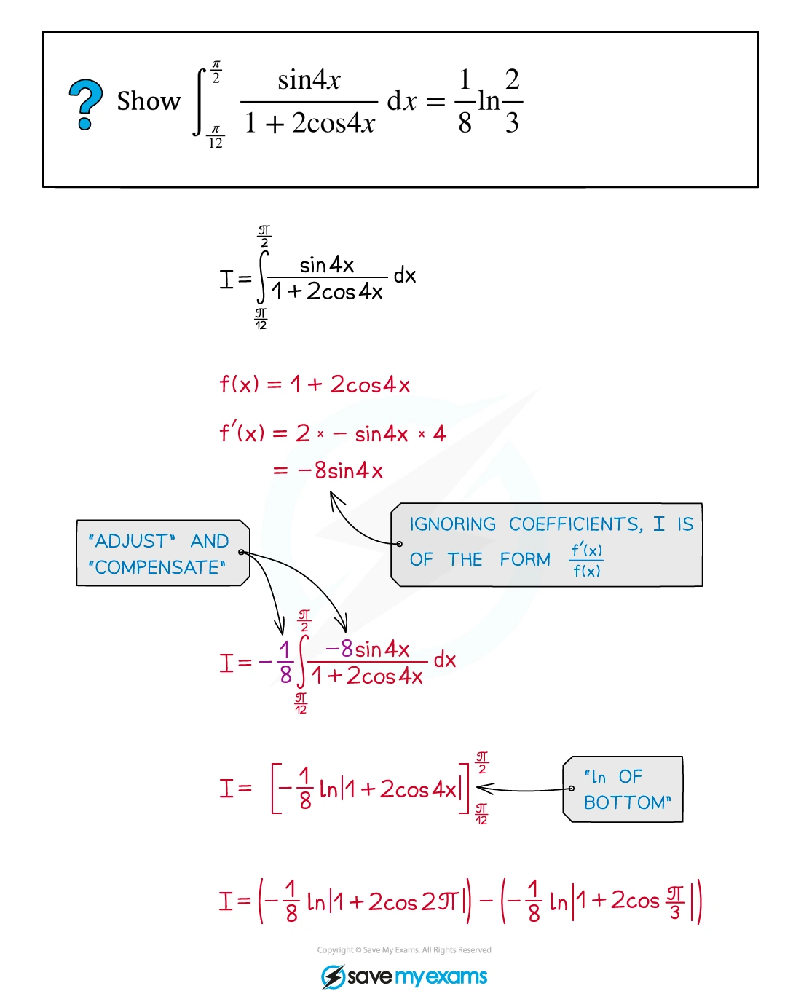
3. Substitution and reverse chain rule
Indefinite integrals
令 u=g(x)，则 du=g'(x)\,dx。完整写法通常是
\int f(g(x))g'(x)\,dx=\int f(u)\,du,
最后把 u 换回 g(x)，并写上 +C。如果题目已经给出 substitution，按题目指定的 u 走，通常能直接获得 method marks。
Definite integrals
换元时有两种等价写法：
- 把 dx 换成 du，并把上下限改成 u 的上下限；或
- 先求出 indefinite integral，最后把 u 换回 x，再代原上下限。
第一种方法通常更短，也能减少忘记换上下限的风险。
Worked example · 笔记第 19 页

Worked example · 笔记第 22 页

Worked example · 笔记第 25 页
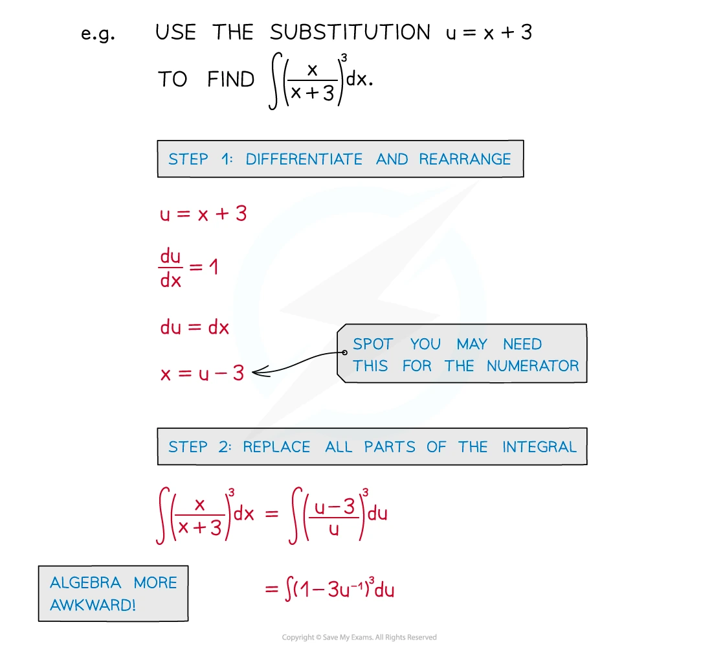
4. Integration by parts
\int u\,\frac{dv}{dx}\,dx=uv-\int v\,\frac{du}{dx}\,dx,
或简写为
\int u\,dv=uv-\int v\,du.
常见选择：把 algebraic factor 取作 u，把 e^{ax}、sin ax 或 cos ax 取作 dv。若出现 \ln x，通常取 u=\ln x、dv=dx。
Worked example · 笔记第 32 页
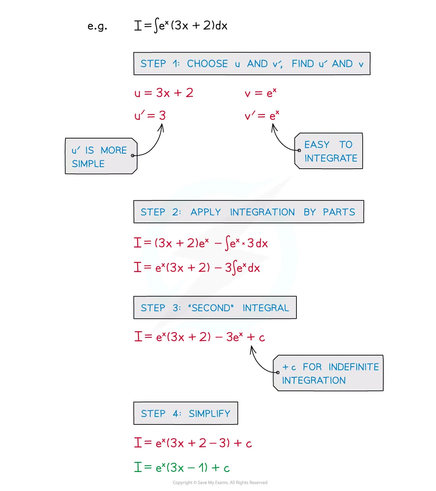
Worked example · 笔记第 33 页
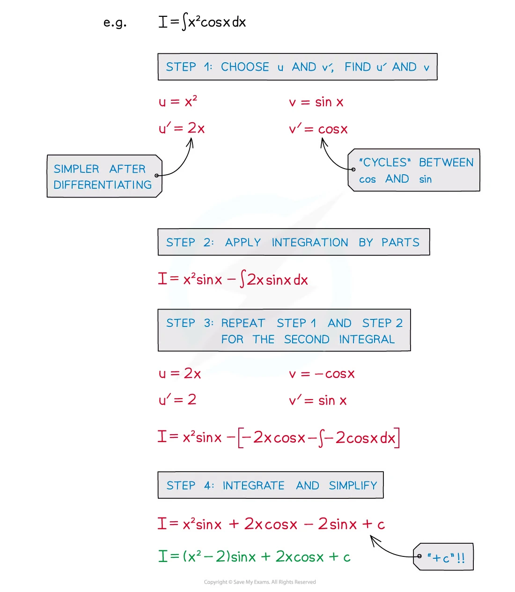
Worked example · 笔记第 35 页
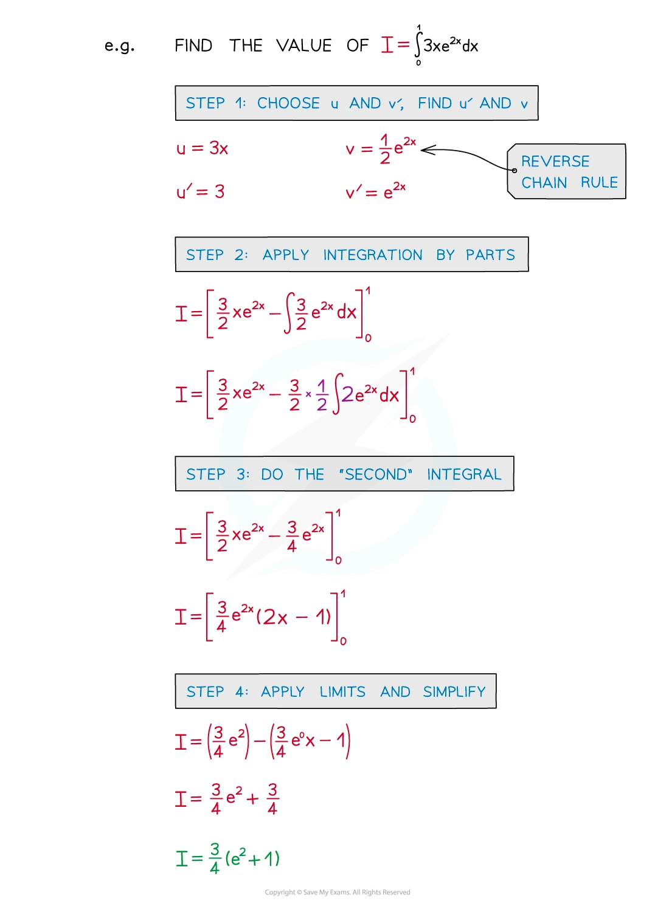
5. Partial fractions
若 denominator 已 factorise，例如
\frac{P(x)}{(ax+b)(x^2+c^2)},
先写出合适的 decomposition：
\frac{P(x)}{(ax+b)(x^2+c^2)} =\frac{A}{ax+b}+\frac{Bx+C}{x^2+c^2}.
如果有 repeated linear factor，要逐层写出：
\frac{P(x)}{(x+a)^2(x+b)} =\frac{A}{x+b}+\frac{B}{x+a}+\frac{C}{(x+a)^2}.
积分时，linear denominator 产生 logarithm；quadratic denominator 通常拆成 x/(x^2+a^2) 与 1/(x^2+a^2) 两类。
Worked example · 笔记第 39 页
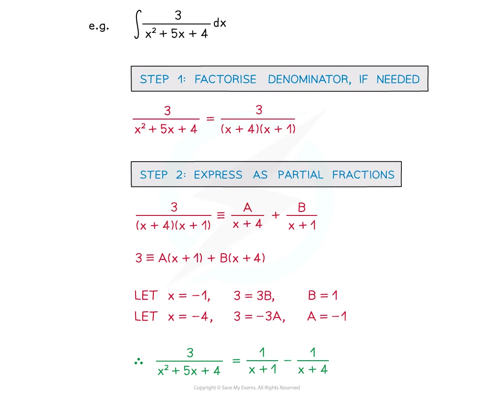
Worked example · 笔记第 43 页
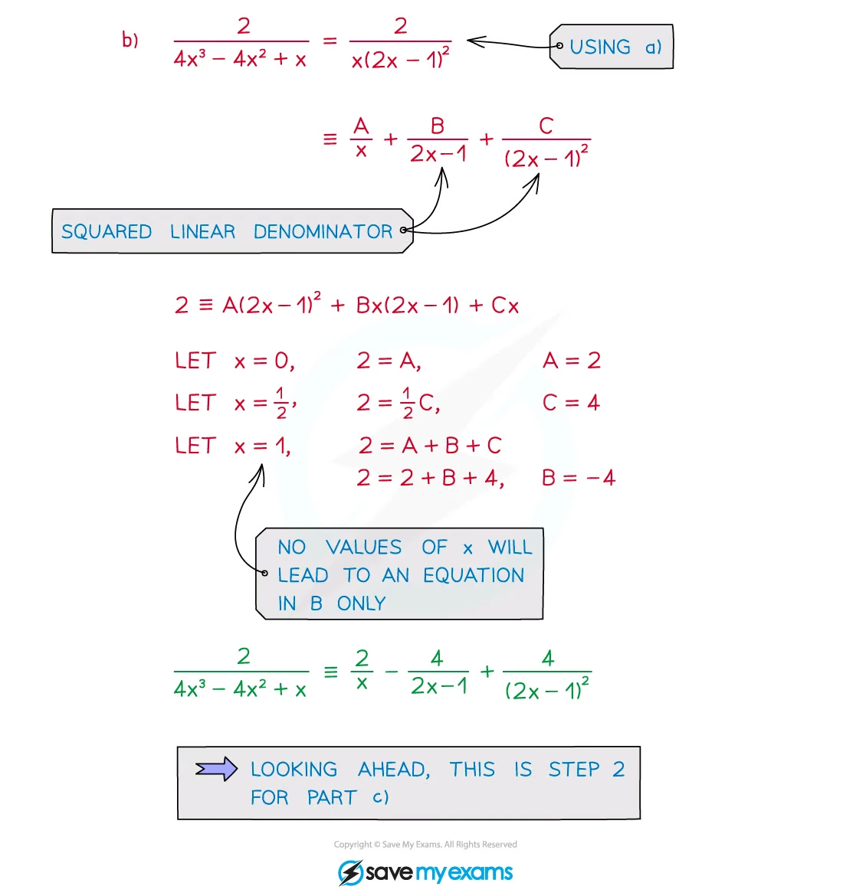
6. Area and exam decisions
若 curve 在 [a,b] 上方，则
\text{area}=\int_a^b y\,dx.
若 curve 在 x-axis 下方，几何 area 要取正值；如果 curve crosses x-axis，则先找 roots，再分段：
\text{area}=\int_a^c y\,dx-\int_c^b y\,dx \quad\text{when }y\ge0\text{ on }[a,c],\ y\le0\text{ on }[c,b].
遇到 shaded-region diagram，先读出 boundary，再决定 integration limits；不要只看题目给出的最后一个 x 值。
Worked application · 笔记第 64 页
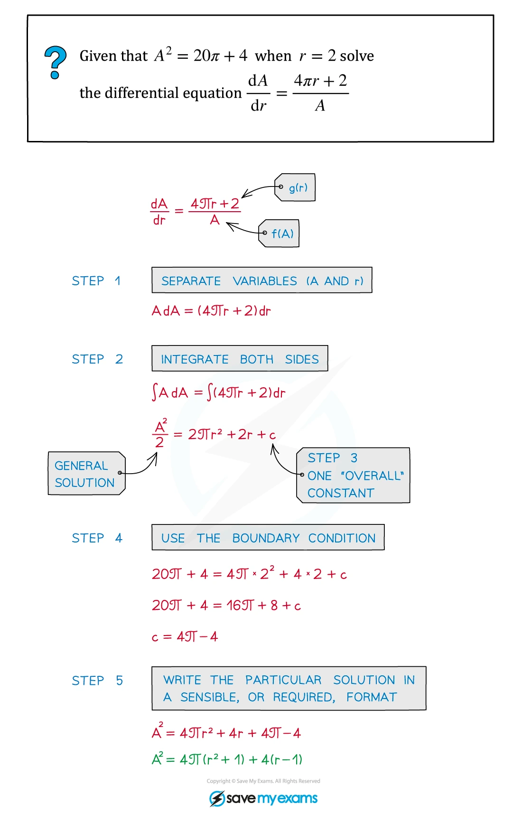
Worked application · 笔记第 79 页
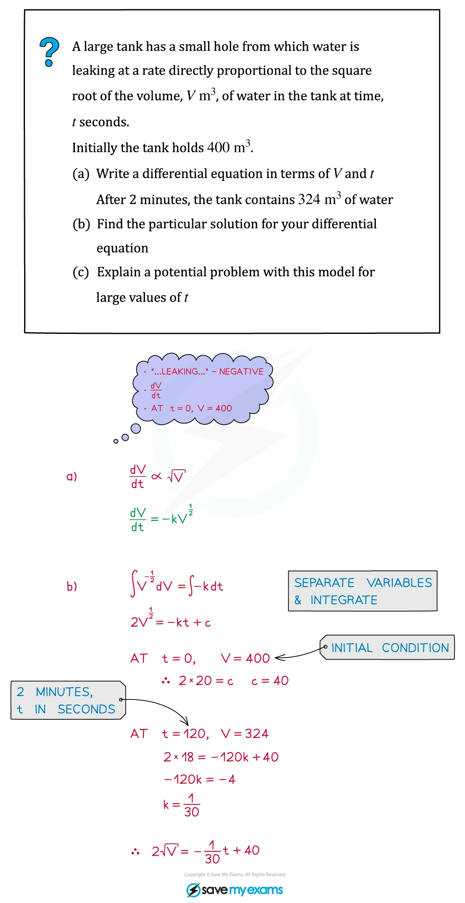
7. Selected Paper 3 questions
以下 20 题均保留 past paper 的题目主文，并按对应 mark scheme 的得分路径补充详细解答。题目中的 diagram 使用从 PDF 独立提取的 SVG 矢量内容，不是整页截图。
Substitution, standard forms and area
Question 1 · 9709/32/M/J/20 Q6(b)
substitutionarea
The diagram shows the curve y=\dfrac{x}{1+3x^4}, for x\ge0. Using the substitution u=3x^2, find by integration the exact area of the shaded region bounded by the curve, the x-axis and the line x=1. [5]
Show detailed mark scheme answer
A=\int_0^1\frac{x}{1+3x^4}\,dx.
令 u=3x^2，则 du=6x\,dx，且 3x^4=u^2/3。因此
\begin{aligned} A&=\frac16\int_0^3\frac{du}{1+u^2/3} =\frac12\int_0^3\frac{du}{u^2+3}\\ &=\frac1{2\sqrt3}\left[\tan^{-1}\left(\frac{u}{\sqrt3}\right)\right]_0^3 =\boxed{\frac{\pi}{6\sqrt3}}. \end{aligned}PastPaper/2020/2020/9709-s20-qp-32.pdf, Q6(b), and matching mark scheme.
Question 2 · 9709/33/M/J/20 Q2
integration by partsexponential
Find the exact value of
\int_0^1(2-x)e^{-2x}\,dx.
[5]
Show detailed mark scheme answer
取 u=2-x，dv=e^{-2x}dx，则 du=-dx、v=-\frac12e^{-2x}。
\begin{aligned} \int(2-x)e^{-2x}\,dx &=-\frac12(2-x)e^{-2x}-\frac12\int e^{-2x}\,dx\\ &=-\frac12(2-x)e^{-2x}+\frac14e^{-2x}\\ &=\left(\frac{x}{2}-\frac34\right)e^{-2x}. \end{aligned}
所以
\begin{aligned} I&=\left[\left(\frac{x}{2}-\frac34\right)e^{-2x}\right]_0^1\\ &=-\frac1{4e^2}-\left(-\frac34\right) =\boxed{\frac34-\frac1{4e^2}}. \end{aligned}PastPaper/2020/2020/9709-s20-qp-33.pdf, Q2, and matching mark scheme.
Question 3 · 9709/31/O/N/20 Q10(b)
areaexponential
The diagram shows the curve y=(2-x)e^{-x/2}. Find the exact area of the region bounded by the curve and the coordinate axes. [5]
Show detailed mark scheme answer
曲线与 x-axis 的交点由 2-x=0 给出，所以 x=2；与 y-axis 的交点是 x=0。因此
A=\int_0^2(2-x)e^{-x/2}\,dx.
直接观察到
\frac{d}{dx}\left(2xe^{-x/2}\right)=(2-x)e^{-x/2}.
于是
A=\left[2xe^{-x/2}\right]_0^2=\boxed{\frac4e}.PastPaper/2020/2020/9709_w20_qp_31.pdf, Q10, and matching mark scheme.
Question 4 · 9709/32/O/N/20 Q9(a–b)
partial fractionsarctangent
Let
f(x)=\frac{7x+18}{(3x+2)(x^2+4)}.
- Express f(x) in partial fractions. (b) Hence find the exact value of \int_0^2f(x)\,dx. [11]
Show detailed mark scheme answer
设
\frac{7x+18}{(3x+2)(x^2+4)}=\frac{A}{3x+2}+\frac{Bx+C}{x^2+4}.
比较
7x+18=A(x^2+4)+(Bx+C)(3x+2).
比较系数得 A=3、B=-1、C=3，所以
f(x)=\frac3{3x+2}+\frac{-x+3}{x^2+4}.
逐项积分：
\begin{aligned} \int_0^2f(x)dx &=\left[\ln(3x+2)-\frac12\ln(x^2+4)+\frac32\tan^{-1}\frac{x}{2}\right]_0^2\\ &=\ln4-\frac12\ln2+\frac32\cdot\frac\pi4\\ &=\boxed{\frac32\ln2+\frac{3\pi}{8}}. \end{aligned}PastPaper/2020/2020/9709_w20_qp_32.pdf, Q9(a–b), and matching mark scheme.
Question 5 · 9709/32/M/J/21 Q10(a)
trigonometric identitysubstitutionarea
The diagram shows the curve y=\sin2x\cos^2x, for 0\le x\le\frac\pi2. Find the exact area bounded by the curve and the x-axis. [5]
Show detailed mark scheme answer
在 0\le x\le\pi/2 上，令 u=\sin x，则 du=\cos x\,dx，并用 \sin2x=2\sin x\cos x：
\begin{aligned} A&=\int_0^{\pi/2}\sin2x\cos^2x\,dx\\ &=\int_0^{\pi/2}2\sin x\cos^3x\,dx. \end{aligned}
更方便令 u=\cos x，du=-\sin xdx：
A=2\int_0^1u^3\,du=\frac12.
因此 \boxed{A=\frac12}。PastPaper/2021/2021/9709_m21_qp_32.pdf, Q10(a), and matching mark scheme.
Question 6 · 9709/32/M/J/21 Q4
integration by partslogarithm
Using integration by parts, find the exact value of
\int_0^2\tan^{-1}\left(\frac{x}{2}\right)dx.
[5]
Show detailed mark scheme answer
令 u=\tan^{-1}(x/2)，dv=dx，则 v=x，且
du=\frac{1/2}{1+x^2/4}dx=\frac{2}{x^2+4}dx.
因此
\begin{aligned} I&=\left[x\tan^{-1}\left(\frac{x}{2}\right)\right]_0^2-\int_0^2\frac{2x}{x^2+4}dx\\ &=2\cdot\frac\pi4-\left[\ln(x^2+4)\right]_0^2\\ &=\frac\pi2-\ln2. \end{aligned}
所以 \boxed{I=\frac\pi2-\ln2}。PastPaper/2021/2021/9709_s21_qp_32.pdf, Q4, and matching mark scheme.
Question 7 · 9709/33/O/N/21 Q9(b)
substitutionarctangent
The function is f(x)=\dfrac1{(9-x)\sqrt{x}}. Show that
\int_0^4f(x)\,dx=\frac13\ln5.
[5]
Show detailed mark scheme answer
令 u=\sqrt{x}，则 x=u^2、dx=2u\,du，且 \sqrt{x}=u：
\begin{aligned} \int_0^4\frac{dx}{(9-x)\sqrt{x}} &=\int_0^2\frac{2u\,du}{(9-u^2)u}\\ &=\int_0^2\frac{2}{9-u^2}du. \end{aligned}
因为
\frac{2}{9-u^2}=\frac13\left(\frac1{3+u}+\frac1{3-u}\right),
所以
\begin{aligned} I&=\frac13\left[\ln(3+u)-\ln(3-u)\right]_0^2\\ &=\frac13\ln\frac5{1}=\boxed{\frac13\ln5}. \end{aligned}PastPaper/2021/2021/9709_w21_qp_33.pdf, Q9(b), and matching mark scheme.
Trigonometric integrals and change of variable
Question 8 · 9709/32/M/J/22 Q11(b)
trigonometric identityarea
The diagram shows the curve y=\sin x\cos2x. Find the exact area enclosed by the curve and the x-axis in the first quadrant. [5]
Show detailed mark scheme answer
在第一象限的正区域中，\cos2x=0 时 x=\pi/4，所以
A=\int_0^{\pi/4}\sin x\cos2x\,dx.
令 u=\cos x，du=-\sin xdx，并用 \cos2x=2u^2-1：
\begin{aligned} A&=\int_{\sqrt2/2}^{1}(2u^2-1)du\\ &=\left[\frac23u^3-u\right]_{\sqrt2/2}^{1}\\ &=\boxed{\frac{\sqrt2-1}{3}}. \end{aligned}PastPaper/2022/2022/9709_m22_qp_32.pdf, Q11(b), and matching mark scheme.
Question 9 · 9709/31/M/J/22 Q6(a–b)
substitutiondefinite integral
I=\int_0^3\frac{27}{(9+x^2)^2}\,dx.
- Show that, using x=3\tan\theta,
I=\int_0^{\pi/4}\cos^2\theta\,d\theta.
- Hence find the exact value of I. [7]
Show detailed mark scheme answer
当 x=3\tan\theta 时，dx=3\sec^2\theta\,d\theta，并且
9+x^2=9(1+\tan^2\theta)=9\sec^2\theta.
因此
\frac{27}{(9+x^2)^2}dx =\frac{27}{81\sec^4\theta}\cdot3\sec^2\theta d\theta =\cos^2\theta d\theta.
x=0 给出 \theta=0，x=3 给出 \theta=\pi/4，故 (a) 成立。
再用 \cos^2\theta=(1+\cos2\theta)/2：
\begin{aligned} I&=\left[\frac\theta2+\frac{\sin2\theta}{4}\right]_0^{\pi/4}\\ &=\boxed{\frac\pi8+\frac14}. \end{aligned}PastPaper/2022/2022/9709_s22_qp_31.pdf, Q6(a–b), and matching mark scheme.
Question 10 · 9709/32/M/J/22 Q8(a–b)
partial fractionsarctangent
Let
f(x)=\frac{x^2+9x}{(3x-1)(x^2+3)}.
- Express f(x) in partial fractions. (b) Hence find the exact value of \int_1^3f(x)\,dx. [10]
Show detailed mark scheme answer
设
f(x)=\frac{A}{3x-1}+\frac{Bx+C}{x^2+3}.
比较系数得 A=1、B=0、C=3，所以
f(x)=\frac1{3x-1}+\frac3{x^2+3}.
于是
\begin{aligned} \int_1^3f(x)dx &=\left[\frac13\ln(3x-1)+\sqrt3\tan^{-1}\frac{x}{\sqrt3}\right]_1^3\\ &=\frac13\ln4+\sqrt3\left(\frac\pi3-\frac\pi6\right)\\ &=\boxed{\frac13\ln4+\frac{\pi\sqrt3}{6}}. \end{aligned}PastPaper/2022/2022/9709_s22_qp_32.pdf, Q8(a–b), and matching mark scheme.
Question 11 · 9709/32/O/N/22 Q8
substitutionarea
The diagram shows part of the curve y=\sin\sqrt{x}. This part of the curve intersects the x-axis at the point where x=a.
State the exact value of a.
Using the substitution u=\sqrt{x}, find the exact area of the shaded region in the first quadrant bounded by this part of the curve and the x-axis. [1+7]
Show detailed mark scheme answer
令 \sin\sqrt a=0。第一次正的 root 满足 \sqrt a=\pi，所以
\boxed{a=\pi^2}.
面积为
A=\int_0^{\pi^2}\sin\sqrt{x}\,dx.
令 u=\sqrt{x}，则 x=u^2、dx=2u\,du：
\begin{aligned} A&=2\int_0^\pi u\sin u\,du\\ &=2\left[-u\cos u+\sin u\right]_0^\pi\\ &=\boxed{2\pi}. \end{aligned}PastPaper/2022/2022/9709_w22_qp_32.pdf, Q8, and matching mark scheme.
Question 12 · 9709/33/M/J/23 Q7(a)
substitutionexponential
Use the substitution u=\cos x to show that
\int_0^\pi\sin2x\,e^{2\cos x}\,dx =\int_{-1}^{1}2u e^{2u}\,du,
[4]
Show detailed mark scheme answer
由 u=\cos x 得 du=-\sin xdx，又 \sin2x=2\sin x\cos x=2u\sin x。上下限为 x=0\Rightarrow u=1、x=\pi\Rightarrow u=-1：
\int_0^\pi\sin2x e^{2\cos x}dx =\int_1^{-1}-2u e^{2u}du =\int_{-1}^12u e^{2u}du.
\int 2u e^{2u}du=e^{2u}\left(u-\frac12\right).
因此
\begin{aligned} I&=\left[e^{2u}\left(u-\frac12\right)\right]_{-1}^{1}\\ &=\frac12e^2+\frac{3}{2e^2}\\ &=\boxed{\frac{e^4+3}{2e^2}}. \end{aligned}PastPaper/2023/2023/9709_s23_qp_33.pdf, Q7(a), and matching mark scheme.
Areas with graph interpretation
Question 13 · 9709/31/O/N/23 Q9(b)
areasubstitutionexponential
The diagram shows the curve y=xe^{-x^2/4}, for x\ge0, and its maximum point M. Using the substitution x=\sqrt{u}, or otherwise, find by integration the exact area of the shaded region bounded by the curve, the x-axis and the line x=3. [5]
Show detailed mark scheme answer
A=\int_0^3xe^{-x^2/4}dx.
令 u=x^2/4，则 du=x/2\,dx，所以 x\,dx=2du。上下限为 0 和 9/4：
\begin{aligned} A&=2\int_0^{9/4}e^{-u}du\\ &=2\left[-e^{-u}\right]_0^{9/4}\\ &=\boxed{2\left(1-e^{-9/4}\right)}. \end{aligned}PastPaper/2023/2023/9709_w23_qp_31.pdf, Q9(b), and matching mark scheme.
Question 14 · 9709/32/M/J/23 Q10(b)
substitutionarea
The diagram shows the curve y=(x+5)\sqrt{3-2x}. Using the substitution u=3-2x, find by integration the area of the shaded region bounded by the curve and the x-axis. [5]
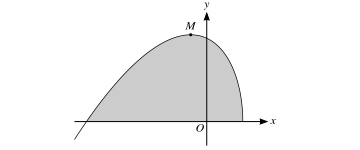
Show detailed mark scheme answer
曲线与 x-axis 的交点是 x=-5 和 x=3/2，所以
A=\int_{-5}^{3/2}(x+5)\sqrt{3-2x}\,dx.
令 u=3-2x，则 x=(3-u)/2、dx=-du/2，且 x+5=(13-u)/2。上下限变为 u=13 和 u=0：
\begin{aligned} A&=\frac14\int_0^{13}(13-u)u^{1/2}du\\ &=\frac14\left[\frac{26}{3}u^{3/2}-\frac25u^{5/2}\right]_0^{13}\\ &=\boxed{\frac{169\sqrt{13}}{15}}. \end{aligned}PastPaper/2023/2023/9709_s23_qp_32.pdf, Q10(b), and matching mark scheme.
Question 15 · 9709/31/M/J/24 Q8
substitutiontrigonometric identity
Use the substitution u=1-\sin x to find the exact value of
\int_\pi^{3\pi/2}\frac{\sin2x}{\sqrt{1-\sin x}}\,dx.
[6]
Show detailed mark scheme answer
由 u=1-\sin x，du=-\cos xdx，且
\sin2x=2\sin x\cos x=2(1-u)\cos x.
上下限：x=\pi\Rightarrow u=1，x=3\pi/2\Rightarrow u=2。故
\begin{aligned} I&=\int_1^2\frac{-2(1-u)}{\sqrt u}du\\ &=\int_1^2 2(u-1)u^{-1/2}du\\ &=\left[\frac43u^{3/2}-4u^{1/2}\right]_1^2\\ &=\boxed{\frac{8-4\sqrt2}{3}}. \end{aligned}PastPaper/2024/2024/A-Level-CAIE数学QP-202406-Mathematics-P31-A-Level题库大全小程序.pdf, Q8, and matching mark scheme.
Question 16 · 9709/31/O/N/24 Q6(b)
trigonometric identityarea
The diagram shows the curve y=\sin2x(1+\sin2x), for 0\le x\le\frac{3\pi}{4}. Find the exact area of the region R above the x-axis. [5]
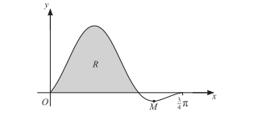
Show detailed mark scheme answer
在 0\le x\le3\pi/4 上，1+\sin2x\ge0。curve 在 x=0 到 x=\pi/2 为非负，因此题目所指 above-axis region 的 area 为
A=\int_0^{\pi/2}\sin2x(1+\sin2x)dx.
展开并分别积分：
\begin{aligned} A&=\int_0^{\pi/2}\sin2x\,dx+\int_0^{\pi/2}\sin^22x\,dx\\ &=1+\int_0^{\pi/2}\frac{1-\cos4x}{2}dx\\ &=\boxed{1+\frac\pi4}. \end{aligned}PastPaper/2024/2024/A-Level-CAIE数学QP-202410-Mathematics-P31-A-Level题库大全小程序.pdf, Q6(b), and matching mark scheme.
Mixed exam-style integrals
Question 17 · 9709/32/O/N/24 Q11(b)
substitutionpartial fractions
Let
f(x)=\frac{2e^{2x}}{e^{2x}-3e^x+2}.
Use the substitution u=e^x and partial fractions to find the exact value of
\int_{\ln3}^{\ln5}f(x)\,dx.
Give your answer in the form \ln a, where a is a rational number in its simplest form. [9]
Show detailed mark scheme answer
令 u=e^x，则 du=e^xdx=u\,dx，所以 dx=du/u，上下限变为 u=3 和 u=5：
I=\int_3^5\frac{2u}{(u-1)(u-2)}du.
设
\frac{2u}{(u-1)(u-2)}=\frac{A}{u-1}+\frac{B}{u-2}.
比较系数得 A=-2、B=4。因此
\begin{aligned} I&=\left[-2\ln(u-1)+4\ln(u-2)\right]_3^5\\ &=(-2\ln4+4\ln3)-(-2\ln2)\\ &=4\ln3-2\ln2\\ &=\boxed{\ln\frac{81}{4}}. \end{aligned}PastPaper/2024/2024/A-Level-CAIE数学QP-202410-Mathematics-P32-A-Level题库大全小程序.pdf, Q11(b), and matching mark scheme.
Question 18 · 9709/31/O/N/21 Q5
substitutionarctangent
Using the substitution u=\sqrt{x}, find the exact value of
\int_3^4\frac{1}{(x+1)\sqrt{x}}\,dx.
[6]
Show detailed mark scheme answer
令 u=\sqrt{x}，则 x=u^2、dx=2u\,du，所以
\frac{dx}{(x+1)\sqrt{x}}=\frac{2u\,du}{(u^2+1)u}=\frac{2}{u^2+1}du.
上下限为 u=\sqrt3 和 u=2：
\begin{aligned} I&=2\int_{\sqrt3}^{2}\frac{du}{1+u^2}\\ &=2\left[\tan^{-1}u\right]_{\sqrt3}^{2}\\ &=\boxed{2\left(\tan^{-1}2-\frac\pi3\right)}. \end{aligned}PastPaper/2021/2021/9709_w21_qp_31.pdf, Q5, and matching mark scheme.
Question 19 · 9709/32/M/J/24 Q6(b)
substitutionexponential
The diagram shows the curve y=xe^{-ax}, where a is a positive constant. Find the exact value of
\int_0^{2/a}xe^{-ax}\,dx.
[5]
Show detailed mark scheme answer
令 u=ax，则 x=u/a、dx=du/a，上下限由 x=0,2/a 变为 u=0,2：
\begin{aligned} I&=\frac1{a^2}\int_0^2ue^{-u}du\\ &=\frac1{a^2}\left[-(u+1)e^{-u}\right]_0^2\\ &=\frac1{a^2}\left(1-3e^{-2}\right). \end{aligned}
所以
\boxed{I=\frac{1-3e^{-2}}{a^2}}.PastPaper/2024/2024/A-Level-CAIE数学QP-202406-Mathematics-P32-A-Level题库大全小程序.pdf, Q6(b), and matching mark scheme.
Question 20 · 9709/31/M/J/23 Q8(b)
partial fractionsdefinite integral
Let
f(x)=\frac{3-3x^2}{(2x+1)(x+2)^2}.
- Express f(x) in partial fractions. (b) Hence find the exact value of
\int_0^4f(x)\,dx,
giving your answer in the form a+b\ln c, where a, b and c are integers. [10]
Show detailed mark scheme answer
设
\frac{3-3x^2}{(2x+1)(x+2)^2} =\frac{A}{2x+1}+\frac{B}{x+2}+\frac{C}{(x+2)^2}.
比较恒等式
3-3x^2=A(x+2)^2+B(2x+1)(x+2)+C(2x+1)
得 A=1、B=-2、C=3。所以
f(x)=\frac1{2x+1}-\frac2{x+2}+\frac3{(x+2)^2}.
逐项积分：
\begin{aligned} \int_0^4f(x)dx &=\left[\frac12\ln(2x+1)-2\ln(x+2)-\frac3{x+2}\right]_0^4\\ &=\left(\frac12\ln9-2\ln6-\frac12\right)-\left(-2\ln2-\frac32\right)\\ &=1+\ln3-2\ln3\\ &=\boxed{1-\ln3}. \end{aligned}PastPaper/2023/2023/9709_m23_qp_31.pdf, Q8, and matching mark scheme.
- 先看 integrand 的结构：standard form、f'/f、substitution、by parts 和 partial fractions 的优先级不同。
- definite integral 换元时，dx、上下限和 integrand 必须同时改变。
- integration by parts 每次都要把 u、dv、du、v 写清楚；定积分不要忘记 boundary term。
- partial fractions 先比较系数，再积分；repeated factors 必须全部写出。
- area 题先读图、找 roots、判断 curve 在 x-axis 上方还是下方，最后再列 integral。
- 最终答案按题目要求化成 exact form，例如 single logarithm、a+b\ln c 或含 \pi 的形式。